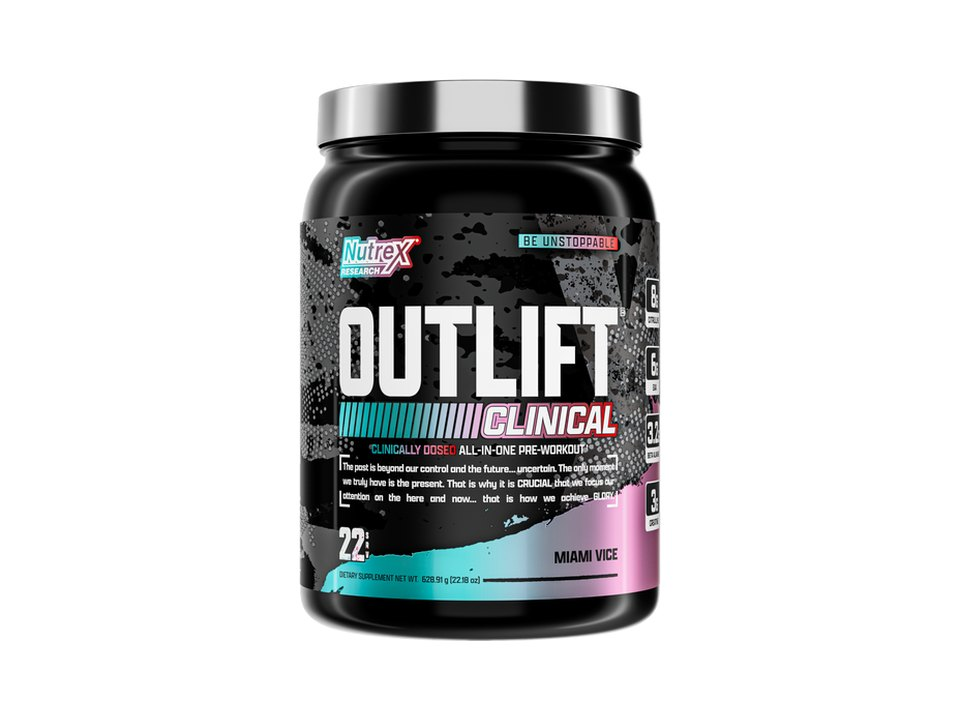

Product imagery supplied by the retailer. Packaging may vary — verify the Supplement Facts panel on the container you receive.
Nutrex Research
Outlift Clinical
High stimulant content · Read safety guidance
Our analysis — editorial take, not from the label
One of the highest-caffeine mainstream pre-workouts at 380mg per 28g scoop, fully dosed and disclosed with 8g citrulline, 3.2g beta-alanine, and 3g creatine, but the stimulant load alone makes it a poor fit for anyone caffeine-sensitive.
- Caffeine
- 380 mg
- Citrulline
- 8 g
- Beta-alanine
- 3.2 g
- Servings
- 22
Price tier: Mid-range · relative cost per full serving across this database
We don't list dollar prices — they change daily and go stale. Check the live price instead:
View current price Compare all 38 pre-workoutsScoop Sense doesn't collect user reviews and won't invent them. Read customer reviews on Amazon
Affiliate links — Scoop Sense may earn a commission at no additional cost to you.
Comes in tropical/fruit flavors like Miami Vice, Fruit Punch, and Blueberry Lemonade, sweetened with sucralose and acesulfame potassium.
Label verified: July 2026 · View label source
Label data
Per full serving · 22 servings per container · from the manufacturer's panel
| Caffeine | 380 mg |
|---|---|
| L-Citrulline | 8 g |
| Beta-Alanine | 3.2 g |
| Creatine Monohydrate | 3 g |
| Proprietary blend | No |
Primary label source: Nutrex official product page · verified July 2026
Cautions
- 380mg caffeine per 28g scoop is roughly 4 cups of coffee in a single serving; among the highest stimulant doses of any mainstream pre-workout, and the label directs no more than one serving in 24 hours.
- 3.2g beta-alanine may cause a temporary tingling sensation.
- Caffeine is split on the label between 300mg caffeine anhydrous and 80mg of a tea-derived (InnovaTea) source rather than coming from one ingredient.
Product details
Where this label sits
Nutrex Research Outlift Clinical sits in the high stim tier of the Scoop Sense pre-workout database, which spans 0–400 mg of caffeine per serving. Every active ingredient on the panel is listed with its own dose — nothing is hidden inside a blend total. It runs 22 servings per container at the full labeled serving. Everything on this page comes from the manufacturer's supplement facts panel as of July 2026 — never from the marketing page.
Key ingredients & studied doses
- Caffeine (300 mg anhydrous + 80 mg InnovaTea natural caffeine) · 380 mg total. One of the highest doses found in a mainstream pre-workout; well above the 200-300mg range used in most caffeine-and-performance studies, so it's worth accounting for other caffeine intake that day.
- L-Citrulline · 8 g. At the top of the 6-8g range shown to support pump and blood flow in citrulline research.
- Beta-Alanine · 3.2 g. Matches the ~3.2g daily dose used in most beta-alanine muscle-carnosine loading studies.
- Creatine Monohydrate · 3 g. Matches the standard 3-5g daily maintenance dose used in creatine research.
Flavors & sweetener
Comes in tropical/fruit flavors like Miami Vice, Fruit Punch, and Blueberry Lemonade, sweetened with sucralose and acesulfame potassium.
Who it's best for
Experienced high-stimulant users only — not a sensible first pre-workout. Derived from the label figures above — not medical advice.
How we log this label
Every entry is built the same way: we read the current supplement facts panel, log each disclosed dose, compare it against the amounts used in published research, flag proprietary blends, and state the cautions plainly. The full methodology explains each step.
This label against the research
How we evaluate labelsEach bar shows the amount commonly used in published human research, and where this label's dose falls against it. Research amounts are context, not a recommendation — they are not doses, and nothing here is medical advice.
-
Caffeine380 mg
At or above the studied amount0studied range 200 mg–400 mg450 mg
Performance studies most often use 3–6 mg per kg of body weight, which works out to roughly 200–400 mg for most adults. The FDA cites 400 mg a day as an amount not generally associated with negative effects in healthy adults.
-
Citrulline8 g
At or above the studied amount0studied range 6 g–8 g10 g
Studies use about 6 g of pure L-citrulline, or 8 g of citrulline malate — which is roughly 6 g of citrulline once the malate is subtracted.
-
Beta-alanine3.2 g
At or above the studied amount0studied range 3.2 g–6.4 g7 g
Studied as a daily loading protocol of 3.2–6.4 g taken for four weeks or longer. A single serving below that range still counts toward the daily total, but one scoop is not a studied dose on its own.
-
Creatine3 g
At or above the studied amount0studied range 3 g–5 g6 g
Maintenance dosing in the research is 3–5 g a day of monohydrate, every day, not only on training days.
Common questions about Nutrex Research Outlift Clinical
How much caffeine is in Nutrex Research Outlift Clinical?
380 mg per full labeled serving — roughly 4 small cups of coffee. Within the Scoop Sense pre-workout database (0–400 mg per serving) that places it in the high stim tier. The FDA cites about 400 mg per day as an amount generally not associated with negative effects in healthy adults, and coffee, tea, and energy drinks count toward the same total.
Why does Nutrex Research Outlift Clinical make my skin tingle?
The 3.2 g of beta-alanine. The prickling (paresthesia) in the face, neck, and hands is generally considered harmless, is dose-dependent, and fades on its own — typically within about an hour. Most beta-alanine studies use 3.2 g per day.
Does Nutrex Research Outlift Clinical disclose every dose?
Yes — the label lists an individual amount for each ingredient, with no proprietary blends. That is what the "label fully disclosed" tag on Scoop Sense means, and it is what lets each dose be compared against the amounts used in published research.
Do the numbers for Nutrex Research Outlift Clinical assume one scoop or two?
All figures on this page are per full labeled serving. 380mg caffeine per 28g scoop is roughly 4 cups of coffee in a single serving; among the highest stimulant doses of any mainstream pre-workout, and the label directs no more than one serving in 24 hours..